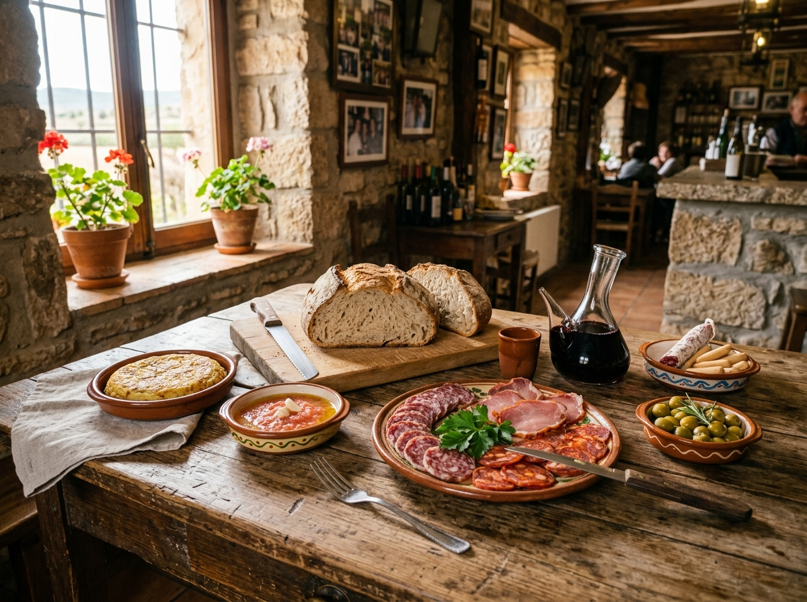

breakfast_dining
Desde las 06:00 h
Almuerzos de Cuadrilla
El rito popular de nuestra comarca: pan recién horneado, embutidos tradicionales de Requena, vino de la tierra y tapas de barra para reponer fuerzas antes de seguir el camino.
Servicio continuado matutino
schedule